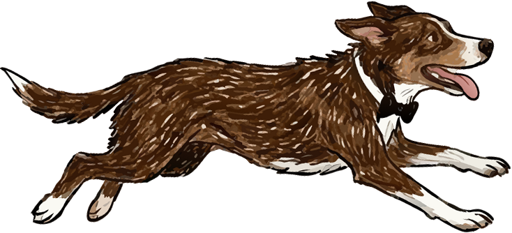
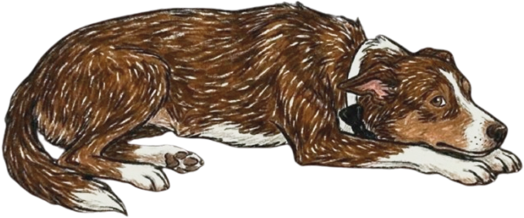

19 · 20 · 21 Febrero 2027


Hemos reservado una habitación para ustedes en Quinta Mina para que podamos disfrutar juntos de todo el fin de semana de celebración.
Viernes 19
Cena de bienvenida
Sábado 20
Nuestra boda
Domingo 21
Desayuno de despedida
HOSPEDAJE
Quinta Mina
Apartado
$1,000 MXN
Fecha límite para reservar
30 de septiembre 2026
Estancia
Las habitaciones se rentan por todo el fin de semana.